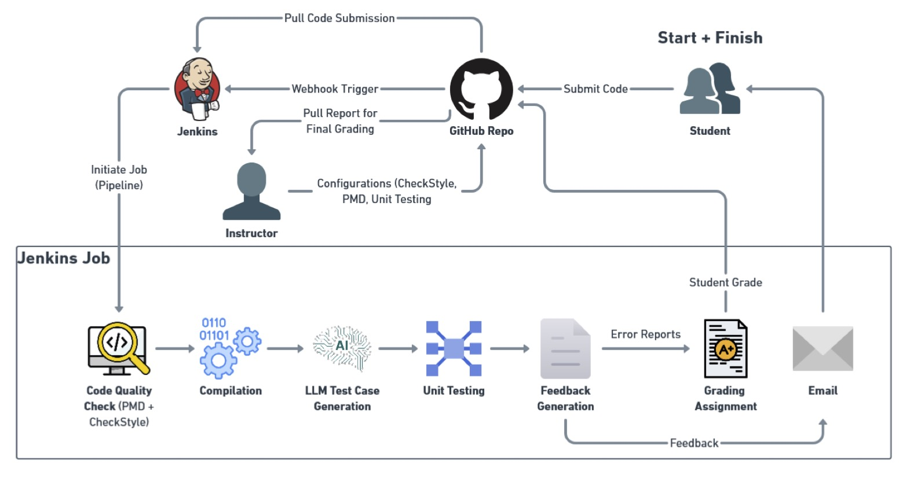
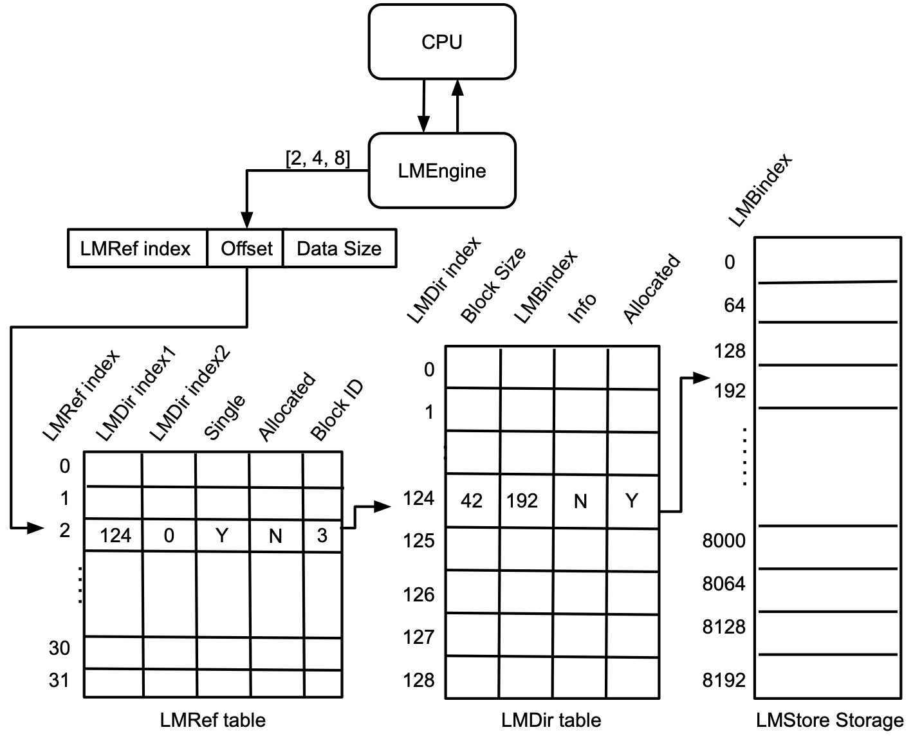

Essa Imhmed, Ph.D.
Assistant Professor, Computer Science
The Software Engineering and Performance Optimization Lab
The Software Engineering and Performance Optimization Lab (SEPO Lab) at Eastern New Mexico University is dedicated to advancing the state of the art in computer science education and performance optimization. Our research focuses on developing AI-powered tools and pedagogical methods that integrate real-world, industry-aligned practices into the classroom to enhance students' software development practices and learning outcomes. We also investigate memory architecture design and innovative data management techniques to improve system performance.
Research Projects
From Submission to Feedback: Leveraging LLMs and CI Tooling for Automated Code Assessment
From Submission to Feedback: Leveraging LLMs and CI Tooling for Automated Code Assessment

Timely, formative feedback is essential in programming education. However, manual grading of code submissions is time-consuming and often delays student learning feedback.
This project investigates modern automated code assessment techniques and proposes CodeInspector, a CI-driven, semi-automated system that integrates industry-standard tools and LLM-based feedback generation. The goal is to provide immediate, high-quality feedback on student submissions while supporting iterative learning and continuous improvement.
System Evolution
Status: Funded by the ENMU FRID Grant Program (2023–2025)
Amount: $8,471
Role: Principal Investigator
Students
- Ludwig Scherer (2025–present) — Undergraduate Research Assistant
- Scott Kilgore (2023–2024) — Undergraduate Research Assistant
AI-Driven Static Analysis and Feedback Generation
Novice programmers often struggle with interpreting runtime errors and identifying logical or stylistic issues in their code. This project explores an AI-driven approach to static code analysis using NLP and machine learning techniques to automatically detect errors and generate meaningful feedback.
Status: Funded by the ENMU FRID Grant Program (2025–2026)
Amount: $2,046
Role: Principal Investigator
Students
- George Candal (2025–present) — Undergraduate Research Assistant
- Ivan Sanjaya (2025–present) — Undergraduate Research Assistant
Local Memory Store for Embedded Systems

Local Memory Store (LMStore) is a novel scratchpad memory design that combines hardware-supported management with explicit program-level control.
Instead of a flat address space, LMStore uses structured tuple-based references (2-tuples and 3-tuples) to manage memory more efficiently. This approach improves memory utilization, reduces latency, and lowers power consumption in embedded systems.
Status: Completed
Students
- Caleb Parten (Spring 2023) — Undergraduate Research Assistant